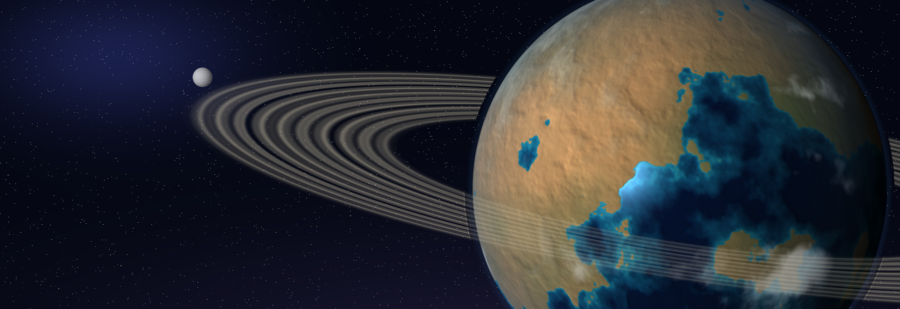
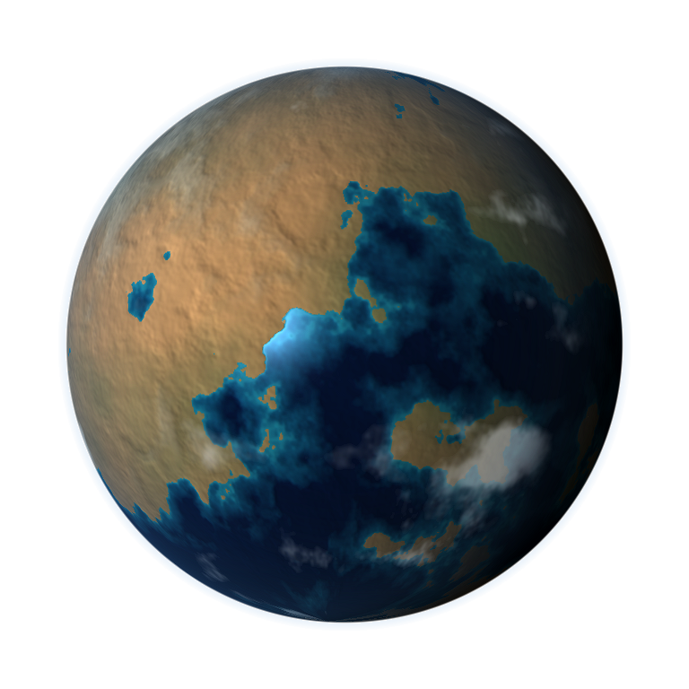
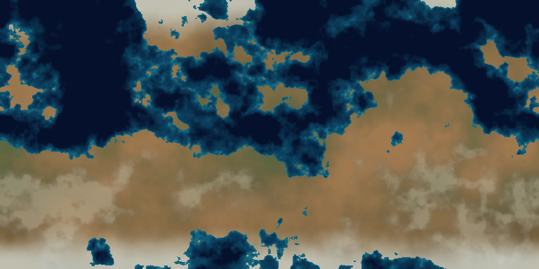

ringed temperate ocean super-earth - G1:S120:P8 - seed 104372302774273
104372302774273

V2 uses layered surface maps, relief lighting, cloud shadows, ocean specular, atmosphere glow, city lights, and sharper ring bands from the same deterministic seed.
